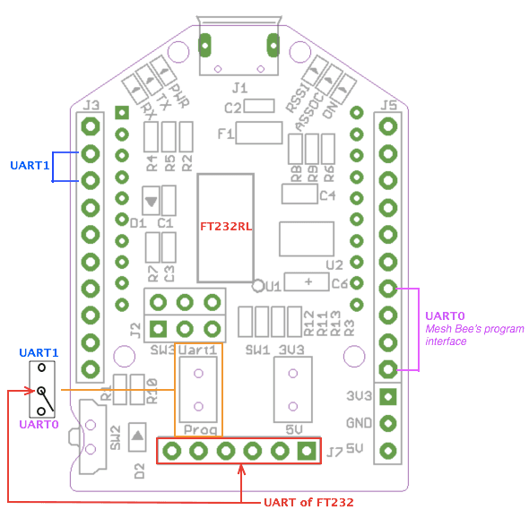

UartSBee v5' is FTDI cable compatible USB to Serial adapter equipped with BEE socket(20pin 2.0mm). The integrated FT232RL can be used for programming or communicating with MCUs. On the other hand, you might connect your PC to various wireless applications via a Bee compatible module. UartSBee provides breakouts for the bit-bang mode pins of FT232RL as well.This Bit-bang mode pins (8 I/O pins) can be used as a replacement for applications involving PC parallel port which is scares now a day.
UartSBee v5 is the Mesh Bee programmer version based on UartSBee v4.
Please refer to UartSBee v4's wiki page for general help topics. In this wiki we focus on the difference between v4 and v5.
